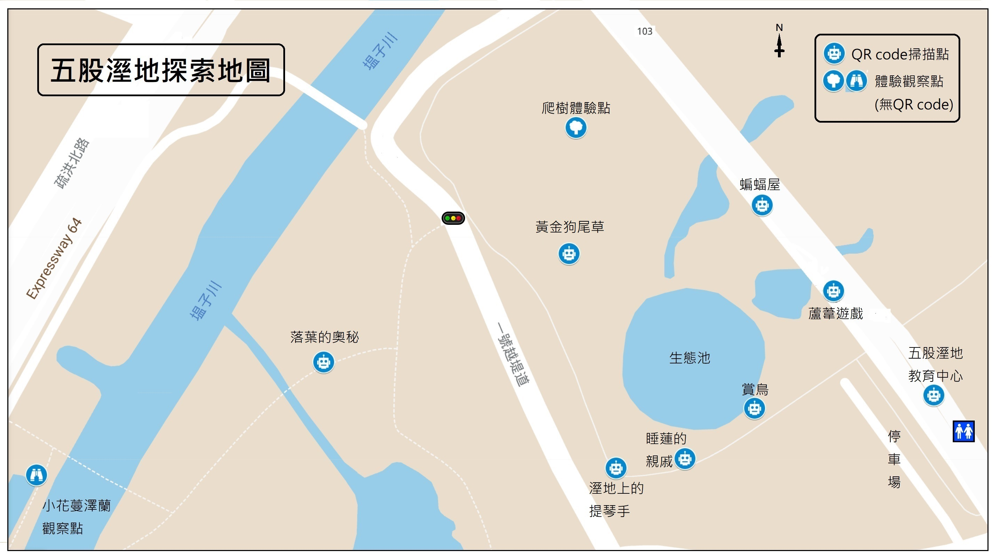

各位聰明的小蜂、小蟻們～恭喜你們成功開啟了今天的團集會任務！
這個月我們來到由荒野保護協會所認養的五股濕地，這裡有許許多多不同的濕地植物、還有濕地常見的招潮蟹，彈塗魚...等等許多大自然中的好朋友等著我們去拜訪他們喔！
若要參加4/12一日限定的工作假期 - 清除小花蔓澤蘭，請點此Google表單
團集會探索任務
今天將由你們和爸爸媽媽組成親子隊，一起探索五股溼地，隨地圖的指示點及線上的活動說明，愉快的體驗每個任務！開始前，請先看活動說明：
1. 爸爸媽媽就是你們這次的導引員＋攝影官，負責傳達任務和紀錄活動過程，都會用到手機，所以除了找方向和討論任務以外的時間，請由爸爸媽媽來拿手機喔！
2. 闖關過程若遇到其他家庭成員記得趕快迴避~~說錯~~~是記得保持1公尺社交距離，還是可以熱情的打招呼。若路上太孤單想就地結盟基本上是不反對，但請不要找陌生人並以不超過3個家庭為限，並請戴上口罩。
3. 時間沒有限制、活動沒有記分，卡關歡迎線上求救，記得所有的大人都是導引員，互相幫忙是應該的。
4. 除了用筆記、撿拾落葉創作外，這次也可以請爸媽試試利用APP拍照和紀錄軌跡，製作獨一無二的活動紀錄喔！
準備好了嗎? 現在就跟著爸爸、媽媽的腳步，帶上你的探險筆記展開一天的冒險吧！
探索地圖說明：
請找到探索地圖上的標記位置後，開啟探索任務（共10個）
8個QR code任務掃描點，請找找看附近的人造物(路障、燈柱、垃圾桶、箱子...等等）上有沒有可疑的圖片，掃描後即可開啟任務網頁

(直接點選地圖可查看關卡地點)
如果實在找不到QR code，大蟻大蜂可以點此進入任務清單，找到對應的任務直接點選。
團集會以家庭分日期方式遊玩，無法實體簽到，為統計出缺席，請蜂蟻家庭遊玩後填寫線上簽到表
https://forms.gle/YuzMn7AM46e57P6L6